Indian Ocean skipjack model : general outputs
This document displays model outputs generated from the
run
task (i.e.
./ioskj.exe run
)
#value
) defined in
parameters/input/parameters.cila
.
Since those values are user inputs the following may not reflect best parameter estimates.
This is primarily intended for checking and illustrating the model.
source('../../common.R',local=T)
load(c(
'lengths','recruits_sizes',
'growth_increments','growth',
'mortalities',
'weights','maturities','selectivities',
'movement',
'numbers',
'track'
),from='../output')
Recruits
print( ggplot(recruits_sizes,aes(x=length,y=value)) + geom_line() + labs(x="Length (cm)",y="Proportion") )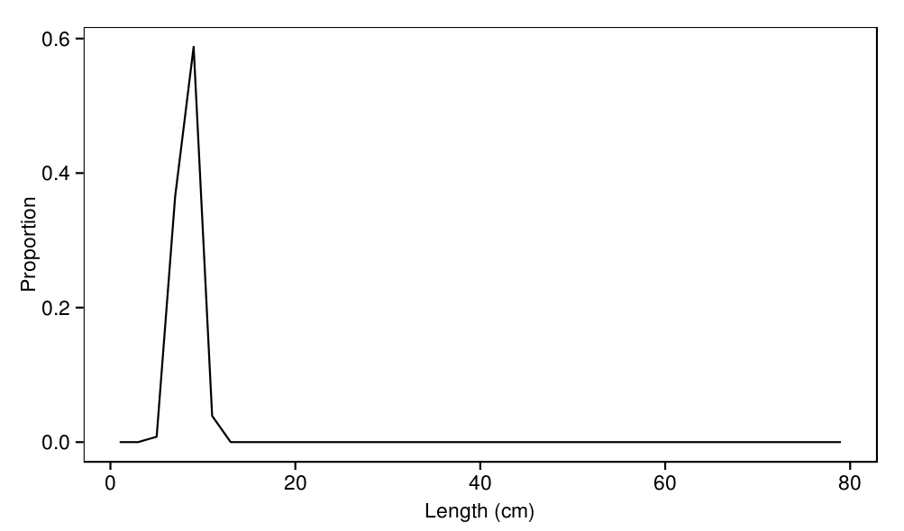
Growth
print( ggplot(growth_increments,aes(x=length,y=value)) + geom_hline(y=0,colour='grey') + geom_line() + labs(x="Length (cm)",y="Quarterly growth increment (cm)") )

print( ggplot(growth) + geom_tile(aes(y=length,x=length_from,fill=value)) + scale_fill_gradient(low="white",high="red") + geom_abline(a=0,b=1) + labs(x="Length from (cm)",y="Length to (cm)",fill="Proportion") )
Weight
print( ggplot(weights,aes(x=length,y=value)) + geom_line() + labs(x="Length (cm)",y="Weight (kg)") )
Maturity
print( ggplot(maturities,aes(x=length,y=value)) + geom_line() + labs(x="Length (cm)",y="Proportion mature") )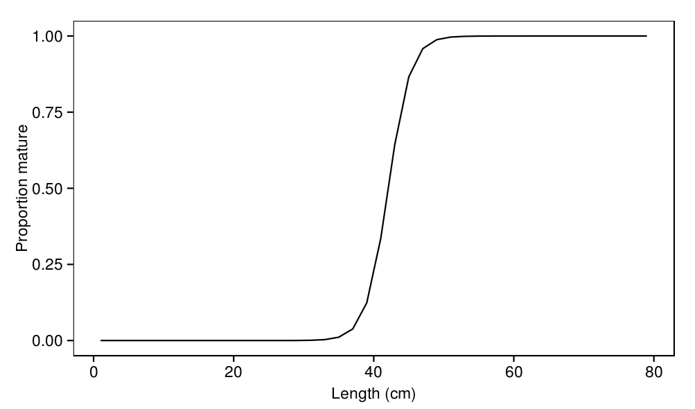
Mortality
print( ggplot(mortalities,aes(x=length,y=value)) + geom_hline(y=0,colour='grey') + geom_line() + labs(x="Length (cm)",y="Instantaneous annual rate or natural mortality") )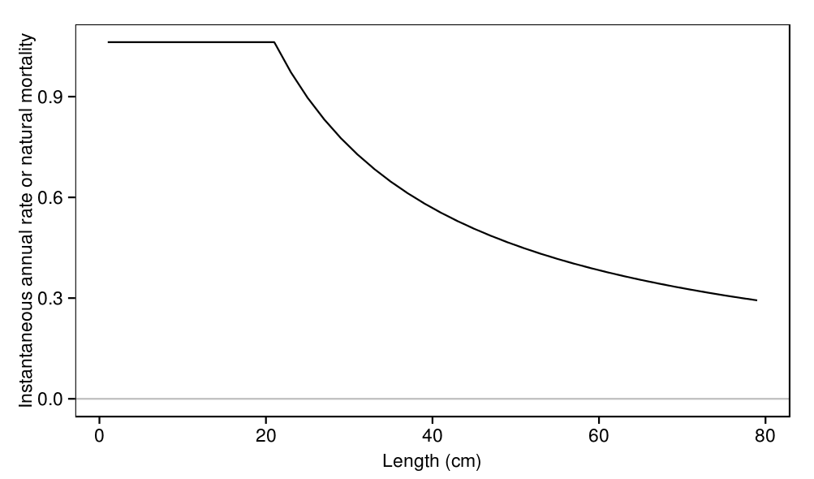
Movement
print( ggplot(movement,aes(y=region_from,x=region,fill=value,label=round(value,4))) + geom_tile() + scale_fill_gradient(low="white",high="red") + geom_text() + labs(y="Region from",x="Region to",fill="Proportion") )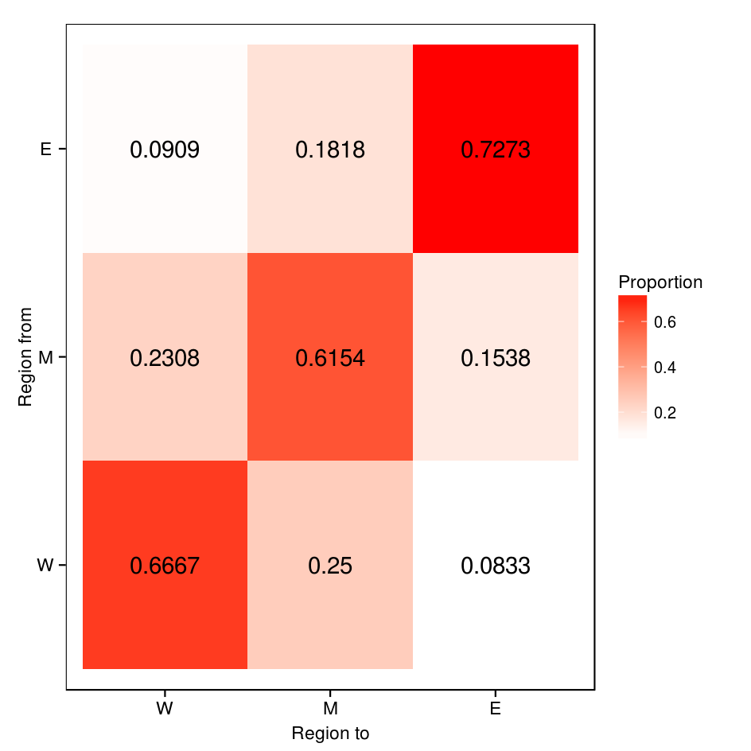
Unfished equilbrium state
The following figures show the distributions of lengths in the population in an unfished state.
print( ggplot(numbers) + geom_line(aes(x=length,y=value/1e6)) + facet_grid(age~region,scale='free_y') + labs(x="Length (cm)",y="Number (mil.)") )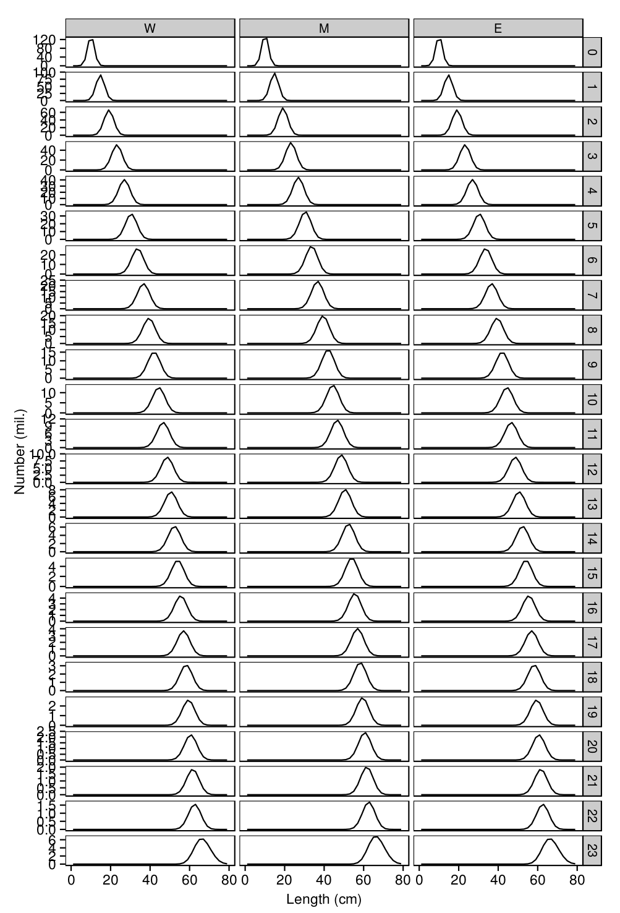
print( ggplot(ddply(numbers,.(region,length),summarise,numbers=sum(value)/1e6)) + geom_line(aes(x=length,y=numbers)) + facet_grid(.~region) + labs(x="Length (cm)",y="Number (mil.)") )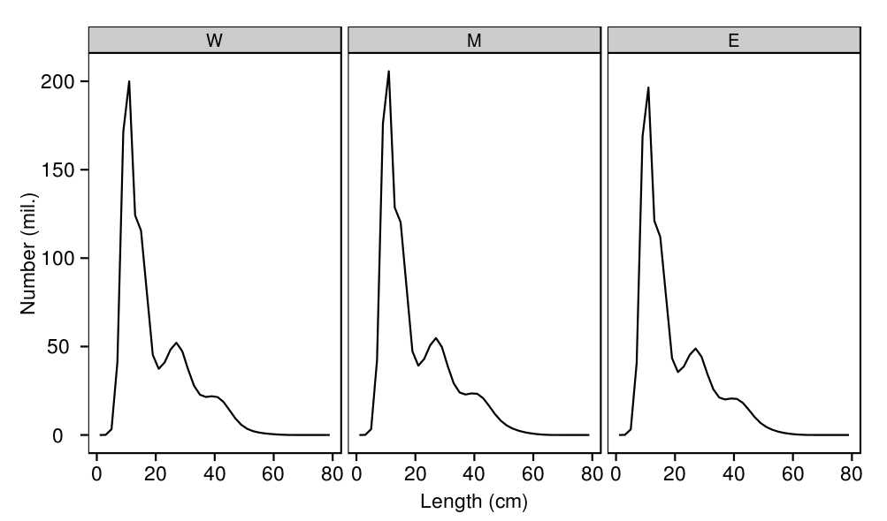
Selectivities
print( ggplot(selectivities,aes(x=length,y=value,colour=method))+ geom_line() + labs(x="Length (cm)",y="Selectivity (prop.)",colour='Method') )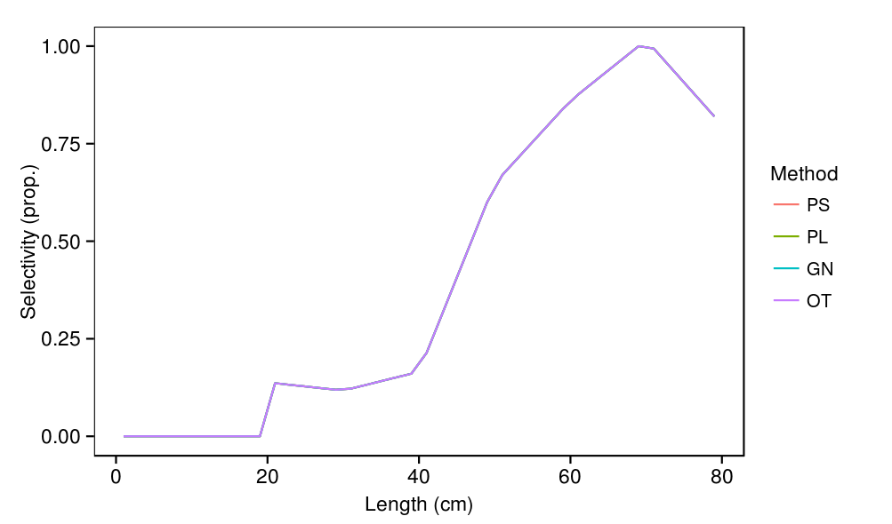
plot_track <- function(what,label){
print(
ggplot(track,aes(x=year+quarter/4)) +
geom_line(aes_string(y=what)) +
geom_hline(y=0,alpha=0) +
geom_vline(x=2015,alpha=0.6,linetype=2) +
labs(x='Year',y=label)
)
}
Recruitment
plot_track('recruits_determ/1e6','Deterministic recruitment (mil.)')
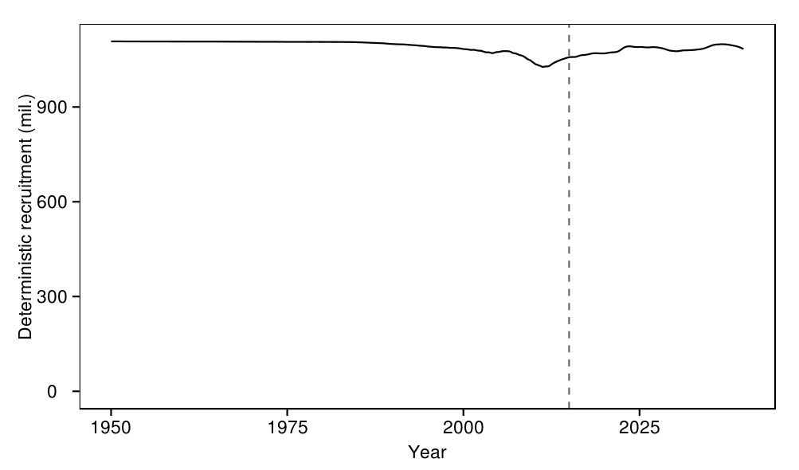
plot_track('recruits_deviation','Recruitment deviation')
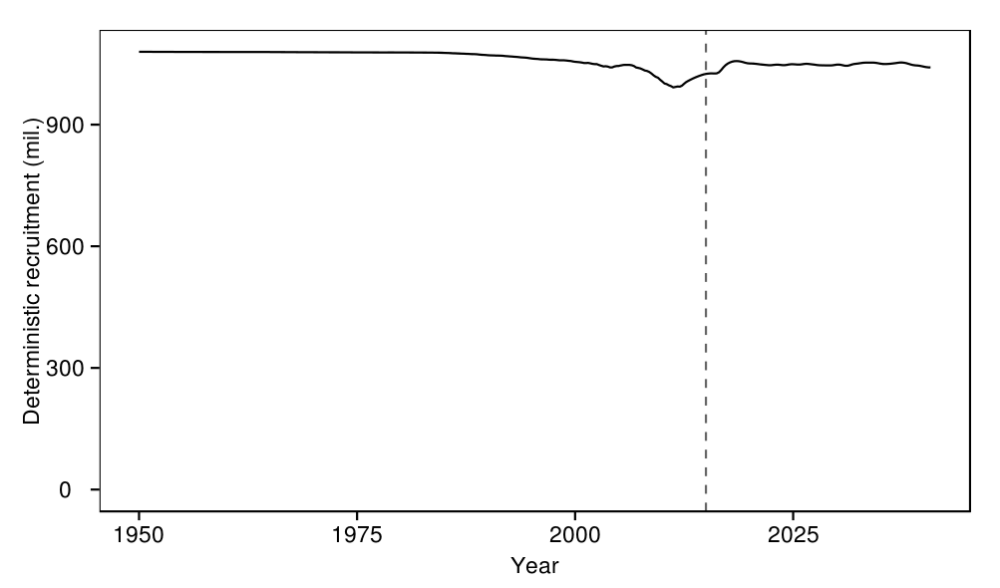
plot_track('recruits/1e6','Recruitment (mil.)')
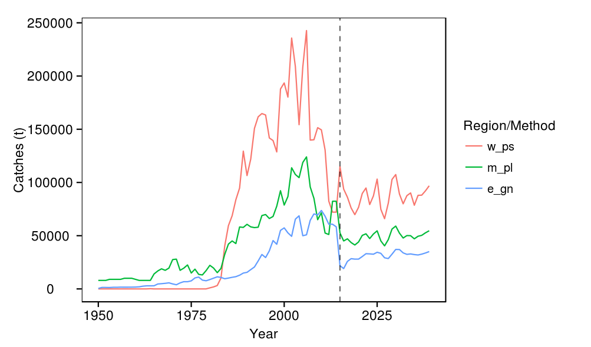
Biomass of mature fish
plot_track('biomass_status','Stock status (biomass of mature fish relative to unfished levels)')
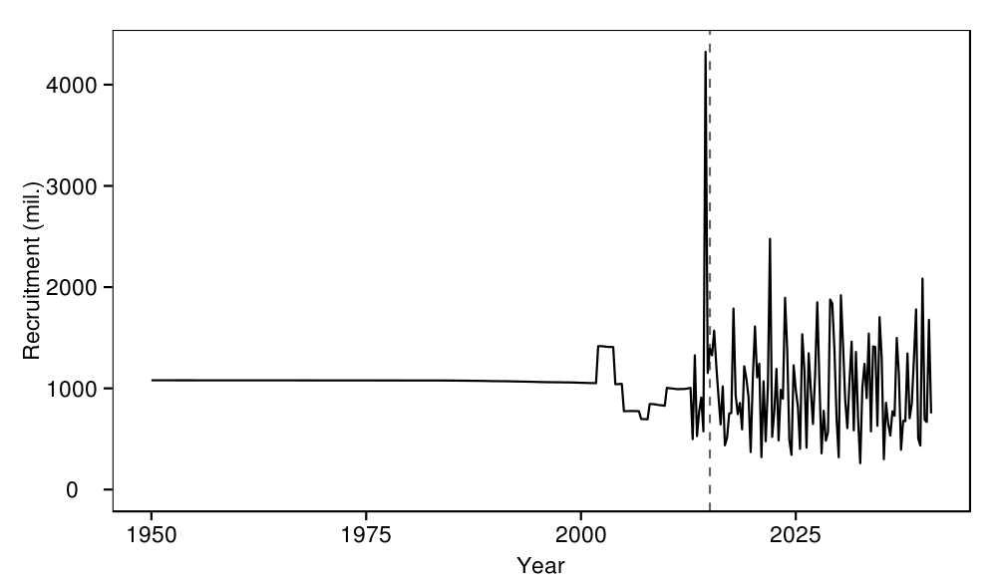
print( ggplot(subset(track,quarter==0),aes(x=year+quarter/4)) + geom_line(aes(y=biomass_spawners_w,colour='W')) + geom_line(aes(y=biomass_spawners_m,colour='M')) + geom_line(aes(y=biomass_spawners_e,colour='E')) + geom_hline(y=0,alpha=0) + geom_vline(x=2015,alpha=0.6,linetype=2) + labs(x='Year',y='Mature biomass in region',colour='Region') )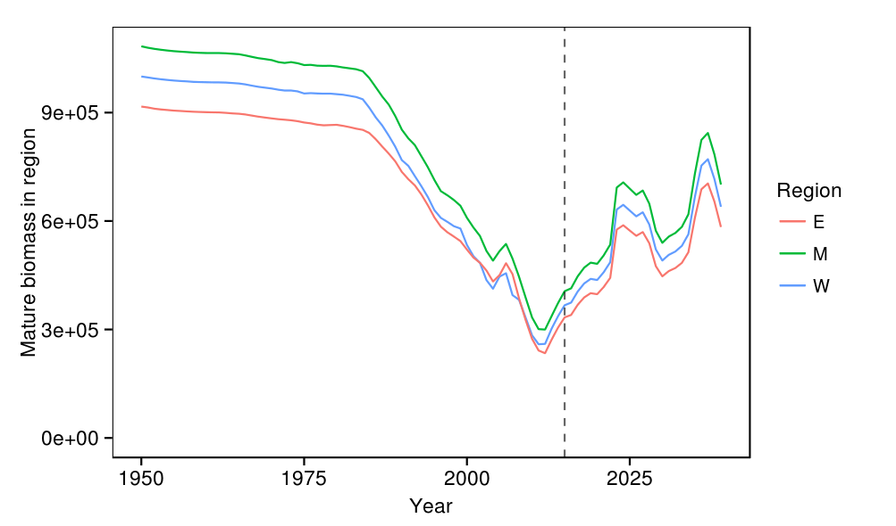
Spawning biomass
plot_track('biomass_spawning_overall','Overall spawning biomass')
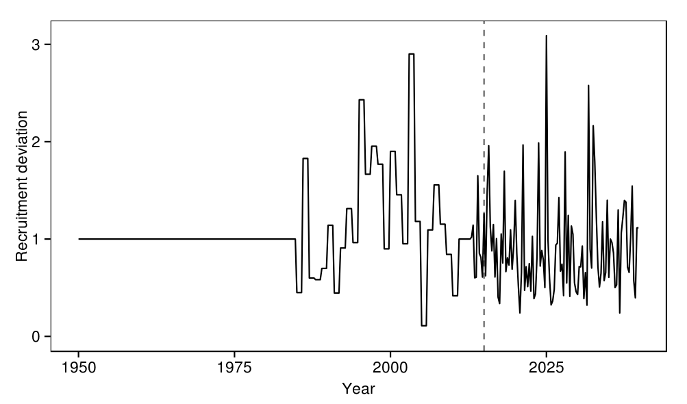
print( ggplot(subset(track,quarter==0),aes(x=year+quarter/4)) + geom_line(aes(y=biomass_spawning_w,colour='W')) + geom_line(aes(y=biomass_spawning_m,colour='M')) + geom_line(aes(y=biomass_spawning_e,colour='E')) + geom_hline(y=0,alpha=0) + geom_vline(x=2015,alpha=0.6,linetype=2) + labs(x='Year',y='Spawning biomass in region',colour='Region') )

Fishery
temp <- melt(track[,c('year','quarter','catches_w_ps','catches_m_pl','catches_e_gn')],id.vars=c('year','quarter'))
print(
ggplot(temp,aes(x=year+quarter/4,y=value,fill=variable)) + geom_bar(stat='identity') +
geom_vline(x=2015,alpha=0.6,linetype=2) +
labs(x='Year',y='Catch (t)')
)
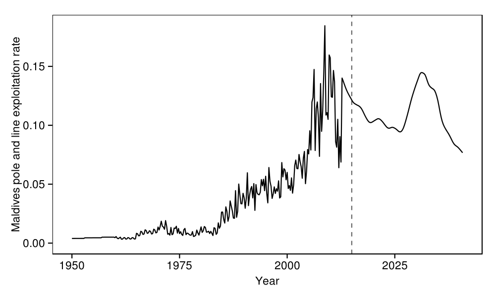
items <- list(
c('w_ps','West (W) pusrse siene (PS)'),
c('m_pl','Maldive (M) pole and line (PL)'),
c('e_gn','East (E) gill net (GN)')
)
plot_track(paste0('biomass_vulnerable_',item[1]),'Vulnerable biomass')
plot_track(paste0('exp_rate_',item[1]),'Exploitation rate')
plot_track(paste0('biomass_vulnerable_',item[1]),'Vulnerable biomass')
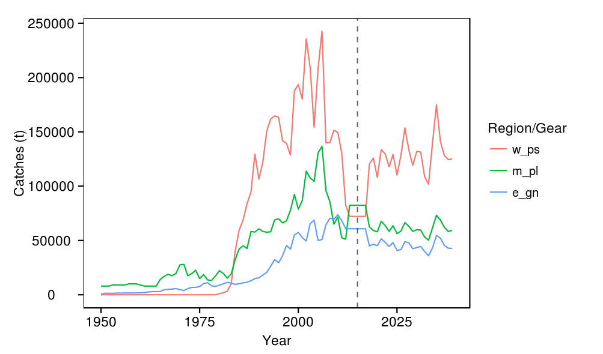
plot_track(paste0('exp_rate_',item[1]),'Exploitation rate')
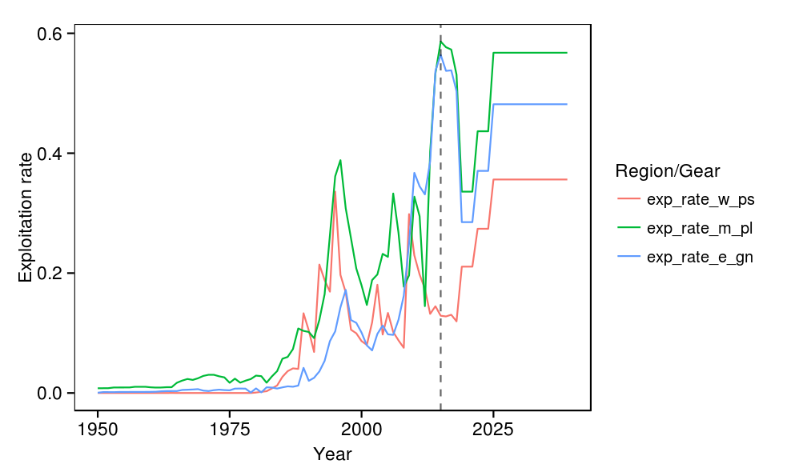
plot_track(paste0('biomass_vulnerable_',item[1]),'Vulnerable biomass')
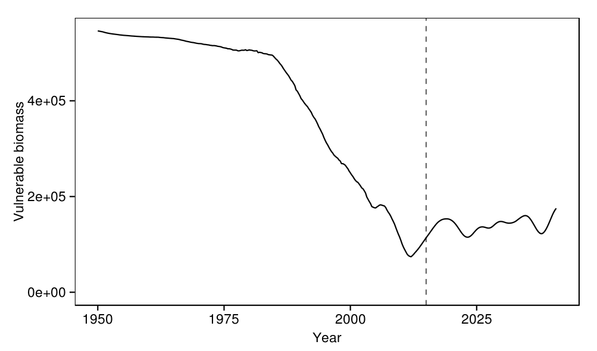
plot_track(paste0('exp_rate_',item[1]),'Exploitation rate')
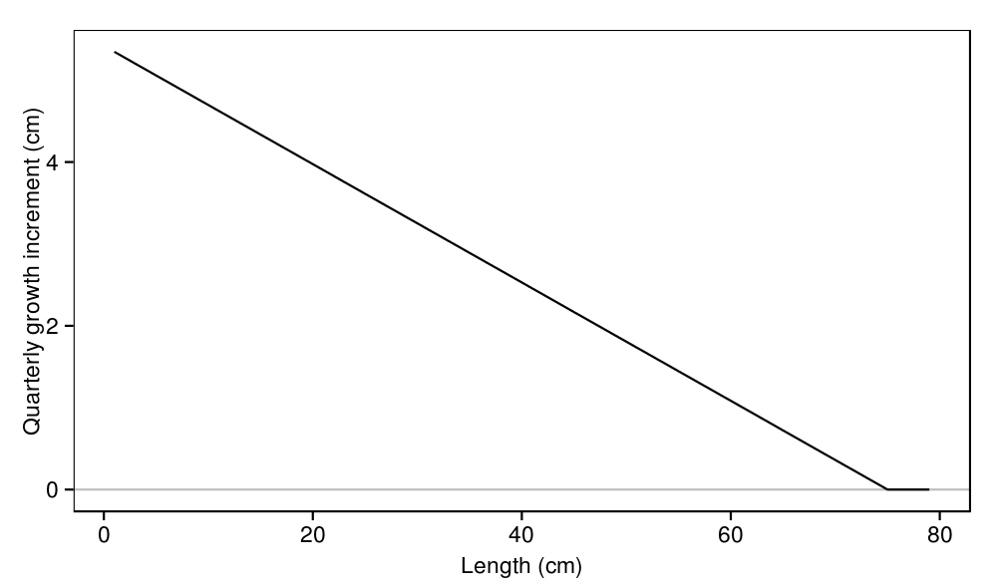
plot_track(paste0('biomass_vulnerable_',item[1]),'Vulnerable biomass')
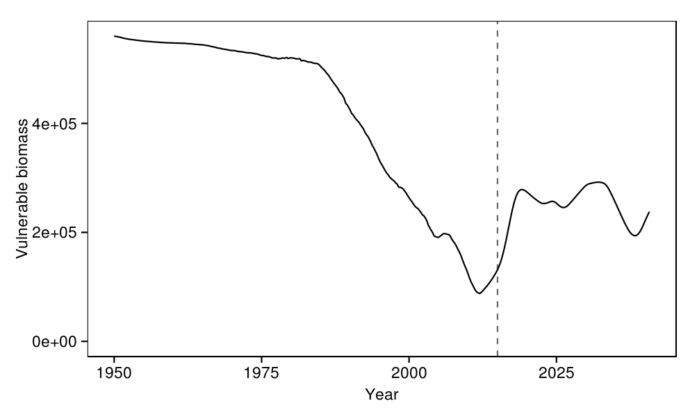
plot_track(paste0('exp_rate_',item[1]),'Exploitation rate')
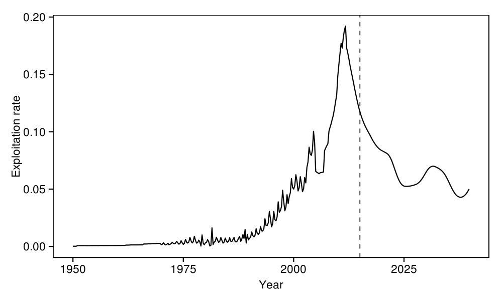